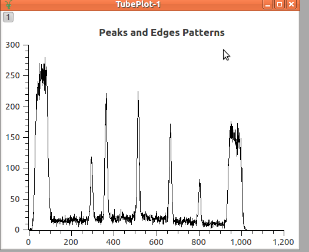
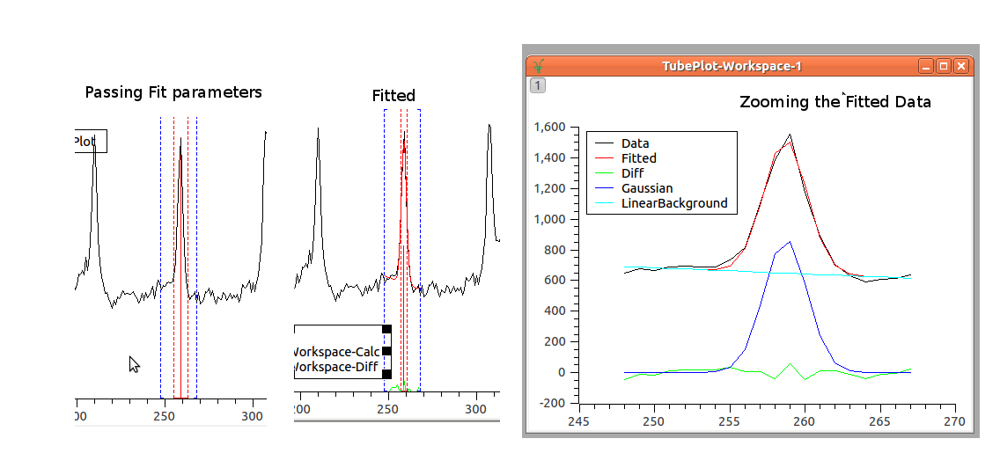
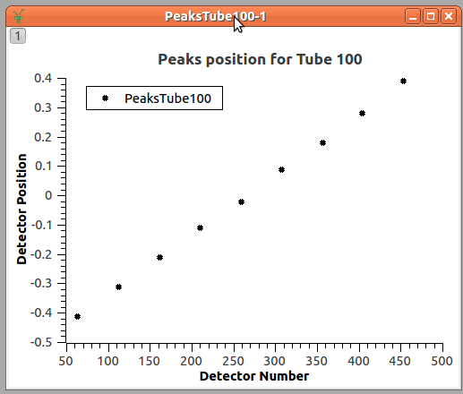
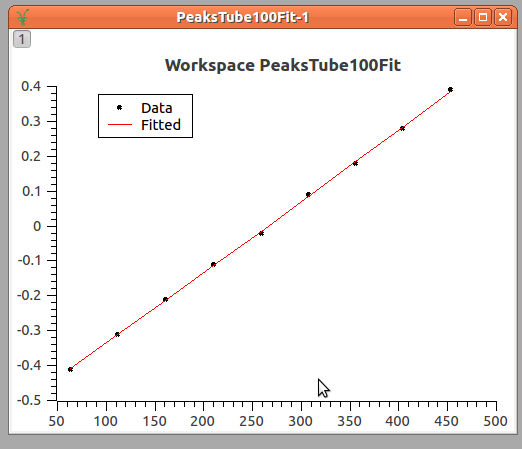
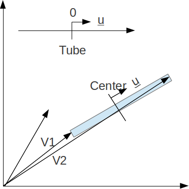

\(\renewcommand\AA{\unicode{x212B}}\)
Tube Calibration Introduction¶
This page is about the python code supporting tube calibration. The files are found in the scripts/Calibration/ folder of the Mantid install directory.
Introduction to Calibration¶
Some instruments use tubes. Each tube acts as set of detectors along a line.
Illustration of a tube with its detectors¶
The exact position of each detector in a tube depends on the electronics of the tube and varies slightly from tube to tube. The aim of calibration is to find the actual position of each detector and put it into the representation of the instrument used by MANTID.
The general technique is to use a calibration bin or to place neutron absorbing strips on the detector at known positions along the tube. Depending on the dimensions of these strips or bins the different patterns may be formed. Below you find an example of some narrow peaks or edges. Although the plot shows measures of peaks of neutron intensity, dip of intensity could be used as well.
The image below shows an acquired data with the shadows and the peaks in two tubes; the blue are shadows and the red lines are peaks where neutron are getting through. Observe that the positions of the lines are different in each tube. Even though they were expected to be aligned, i.e. in the figure below the vertical red lines should be connected up to form straight lines.
Acquired Data in two tubes not calibrated¶
Below is the plot of the integration counts in a single tube. The x-axis shows pixels (detector numbers, where the detectors are numbered 0 to 511) and the y-axis shows integrated counts.
Plot of the acquired Data in a single tube¶
So, it is the aim of the calibration to define the positions of the detectors, so that, the calibrated data will really show straight lines.
This calibration is done through three main steps:
Peak/Edge position estimation
Find the correct position along the tube
Apply the correction to the detectors
From now on, the calibration will be explained considering only peaks. For edges the operation are similar.
Peak position estimation¶
The first necessary operation to do is to find the position where the peak of acquisition should be in each tube. Currently, this is done through fitting the peak to a combination of a linear background and a Gaussian function. But, in the future, different approaches can be foreseen as for example, the mean value among the peak position of the neighbors, or simply getting the index where the maximum value occur.
{kind=link}
By fitting the acquired data to the Gaussian function, we are able to find the PeakCentre (one parameter of the Gaussian Function), that is the estimated value of where the peak would be found in the tube. It is expected that this estimation provides better result than just getting the index of local maximum for the peak.
In conclusion, this operation will provide the expected position of the peaks in each tube. For example, for the picture above, nine points will be found as peaks positions.
Find the correct position along the tube¶
In the introduction, it was said that the bin or strips are placed at known positions. These known positions in the calibration framework are used to construct the IdealTube, the tube where the peaks occur at the exactly known positions.
Here, an agreement is necessary to define how the positions will be given for the tubes. The tubes may be considered as lines, where the detectors have to be adjusted only in one direction. In the example below, the positions were given having the center as origin and increasing from left to right. (Suggestion: it would be simple by assuming origin on the left and increasing values)
Having this, we display the data using the peaks positions (pixel number) found for each tube and the correspondingly ideal position we expected them to be.
Look, that the peaks positions are given in ‘pixels’, and we are looking for a transformation that moves the peaks position to the known position, those defined in the IdealTube, as the function:
\(T(pixels) = TubePosition\)
Currently, this is done by fitting these data to a quadratic function. (Should we consider 3rd order polynomial as said in the documentation?)
\(Position(pixels) = a \times pixels^2 + b \times pixels + c\)
The result is shown in the plot below
The final step is to define the transformation that moves the position in relation to the center of the tube to the 3D space where the tube is.
Assuming that the units given for the position in the IdealTube and for the 3D space are the same, as in the picture below
We have that the 3D position is:
\(\vec{p} = \vec{c} + v \vec{u}\)
Where \(\vec{c}\) is the coordinate of the center of the tube and is:
\(\vec{c} = \frac{\vec{v_1} + \vec{v_2}}{2}\)
For \(\vec{v_1}\) and \(\vec{v_2}\) refer to the position of the first and the last detector inside the tube.
V is the real value of the position in relation to the center (the values from the equation \(y = ax^2+bx+c\)).
And u is the unitary vector and is
\(\vec{u} = \frac{\vec{v_2} - \vec{v_1}}{|v_2-v_1|}\)
If the units are different, them, the equation changes to:
\(\vec{p} = \vec{c} + \frac{v}{l} l' \vec{u}\)
Where \(l\) is the length of the tube in the coordinates given for the IdealTube while \(l'\) is the length of the tube in the 3D space.
Apply the correction to the detectors¶
After having the defined position for the detectors, these positions are applied to the instrument.
Category: Calibration